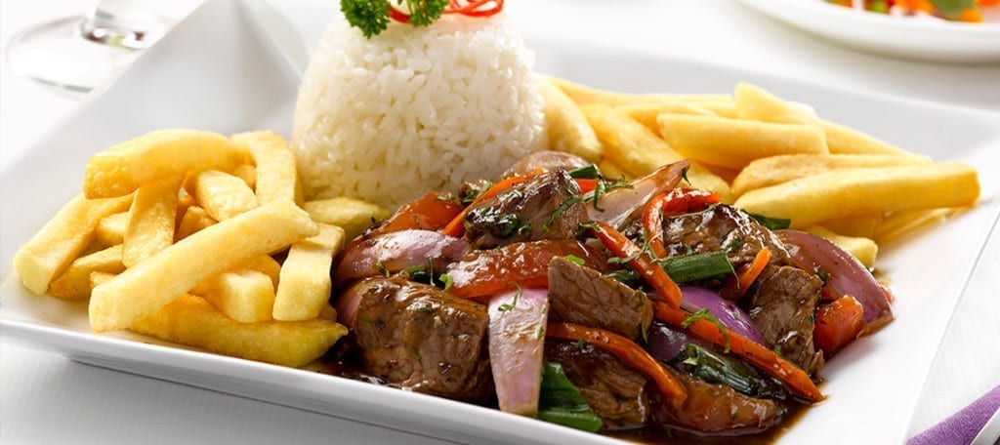

Receta de Lomo Saltado

Plato de Lomo Saltado
Este plato lleva pedazos de bistec con papas fritas y arroz blanco aparte
Ingredientes:
- 1 lb. sirloin steak cut into 1/2 in. strips
- 1/4 cup of soy sauce
- 3 tbs white vinegar
- 1 tbs cumin
- 1 tbs paprika
- 3 cloves of garlic minced
- 1/4 cup vegetable oil
- 1 red onion sliced
- 2 tomatoes sliced wedges
- 1 yellow pepper sliced
- 1/4 cup chopped cilantro, chopped parsley
- fries
- white rice
- oyster sauce
- ground black pepper
- pisco
- chicken broth if available
Instrucciones:
- En un tazon grande, mezcla la salsa de soja, el vinagre blanco, el comino, el pimenton, y el ajo. Cortas el bistec en tiras. Agregue un poquito de la marinada en la taza de bistec. Ahorra el resto. Deje marinar un buen rato.
- Corta la cebolla roja, tomates, chile amarillo, chilantro, y perijil.
- Caliente el aceite vegetal en una sarten grande a fuego alto. Agregue el bistec y la marinada a la sarten y cocine durante 2-3 minutos revolviendo ocasionalmente hasta que el bistec este dorado y cocido.
- Agregue la cebolla roja, los tomates, y el chile amarillo a la sarten y cocine por otros 2-3 minutos, revolviendo ocasionalmente hasta que las verduras esten ligeramente suaves.
- Retire la sarten del fuego y agregue el cilantro y perijil
- Sirva el Lomo Saltado sobre una cama de arroz blanco y cubra con papas fritas !Disfrute!